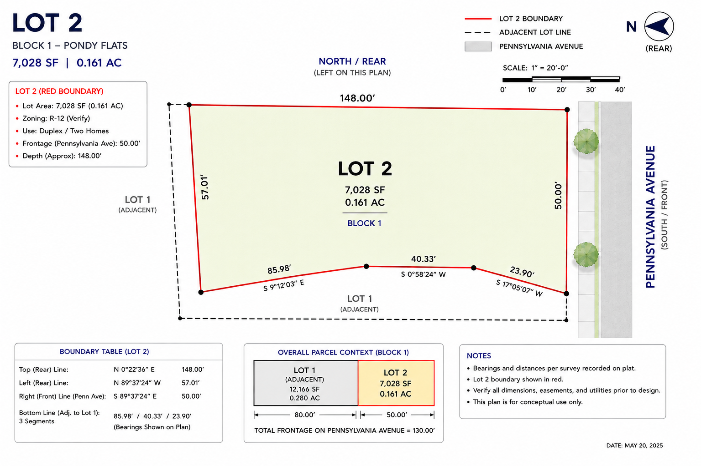

Seven strategies. One test bench.
Single Home Options
Separate design lane — not part of the seven-strategy duplex comparison.
Side Drive + Rear Garage
Strong Pennsylvania-facing presence; garage left/rear of house.
L-Shaped House
Responds to the irregular bottom boundary.
Front Courtyard + Side Garage
Arrival court at Pennsylvania.
Duplex / Two-Home Design Lab
Seven genuinely different spatial strategies — each with a defined role in the comparison. No premature numeric ranking until all Pass 1 math exists.
Locked Survey Reference
Do not rotate north-up. Compass points left (north/rear).
Recorded plat: 7,028 SF. Closure error 0.004′.
Working setback assumption — not survey fact.
E2 Recessed Garage
One coherent street-facing duplex mass at the right-hand Pennsylvania edge. Both 22×22 garages sit left/rear of the living plates. Drive enters from Penn and travels left.
Most marketable orthogonal solution. Clean Penn elevation potential.
50′ frontage limits side-by-side width — party-wall coordination required.
E1 Deep-Stagger
Unit B moves significantly left along the 148′ axis, creating independent yard zones.
Simple rectangular framing with better separation than tandem rows.
Rear-unit identity and balanced yard sizes.
E3 Front Courtyard
Landscaped court at the Pennsylvania (right) edge between flanking units. Garages deep left/rear.
Memorable arrival sequence from Pennsylvania.
Court width vs. drive placement — not a tandem-row gap.
F1 Rear Motor Court
Compact Pennsylvania-facing duplex; garages offset left along 148′ axis with shared motor court. Drive enters from the right.
Pennsylvania sees almost no garage architecture.
Majority of living area must continue upstairs; motor-court turning unproven.
G1 Z-Duplex
Unit A closer to Pennsylvania; Unit B shifts left/rear. Private yards at opposite ends.
Potential economic alternative to V2 angling.
Party-wall / service core organization.
G2 Interlocking-L
Two L-shaped plates interlock; negative space between becomes the private garden.
Individual identity and courtyard potential.
Extra corners, roof intersections, interior efficiency.
V2 Long-Axis V
750 SF first-floor trapezoid per wing; ~1,050 SF second-floor target. Garages left of wing tips. Drive from Penn/right.
Best privacy, daylight, and resale character potential.
Angled foundations, roof complexity, swept-path access.
H2 Carriage-Hinge Duplex
H3 Mews Courtyard Pair
H4 Garage-Under / LOG
H5 Urban Cottage Pair
H6 Central-Core Duplex
Pass 1.5 metrics
Polygon-accurate validation: lab.html. Setbacks are planning assumptions — not survey facts.
| Concept | Group | 1st fl / unit | Living | Garage | Paved | Yard | Drive | Status | Verdict |
|---|
Exploration archive
Pre-orientation-correction concepts retained for design-history reference only.
Tandem row
Collapsed into same geometry as E3/E4 under old axis. Dropped from seven-strategy shortlist.
Two detached
False variant of tandem row. Ownership alternate if economics justify separate structures.
Offset motor court
Feasibility variant of F1 — offset garages along 148′ axis.
Geometry & assumption control
